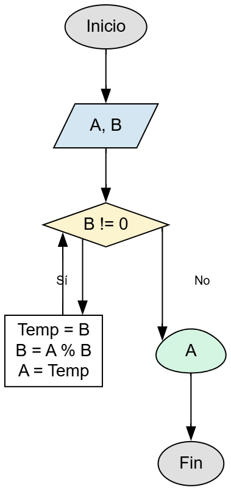

📝 Descripción del Problema
Construya un diagrama de flujo que calcule el Máximo Común Divisor (MCD) de dos números naturales A y B. El MCD es el número natural más grande que puede dividir exactamente a ambos números sin dejar residuo.
Para resolverlo, se deben leer ambos valores, aplicar un proceso iterativo que vaya reduciendo los valores mediante operaciones de residuo, y determinar el valor final que representa el divisor común más grande.
Datos: A y B (enteros).
💡 Pistas y Fórmulas Clave
- La clase principal debe llamarse
MCD.java. - El método recomendado para resolver este problema es el Algoritmo de Euclides.
- Dicho algoritmo usa un ciclo
whileque repite operaciones mientrasBsea distinto de 0. - La lógica del algoritmo es:
temp = BB = A % B(residuo de A entre B)A = temp- El proceso continúa hasta que
Bllegue a 0. - Cuando el bucle finaliza, el valor de
Aes el Máximo Común Divisor. - El programa debe manejar casos como:
- Uno de los números es 0.
- Números en orden invertido (A < B).
- Números primos entre sí (MCD = 1).
- Un número es múltiplo exacto del otro.
📊 Diagrama de Flujo
Aquí va la imagen del diagrama de flujo.';">